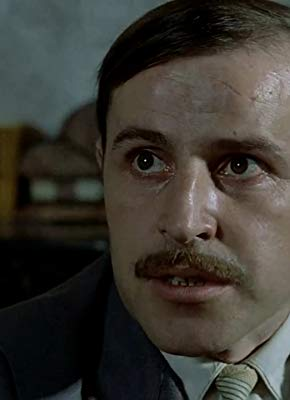

#9141 Lacombe Lucien
Auszeichnungen: für 1 Oscars nominiert 1 BAFTA-Awards gewonnen

 IMDB-Wertung: 7.8 / 10
IMDB-Wertung: 7.8 / 10  Tomatometer: 100
Tomatometer: 100  Metascore: 0
Metascore: 0 
Frankreich, Juni 1944. Gedemütigt von der Résistance, die ihn als zu jung abgelehnt hat, lässt sich der Bauernsohn Lucien von den Nationalsozialisten werben und wird zum Helfershelfer der Gestapo. Schnell erliegt er der Faszination von Macht und Gewalt. Mit gestärktem Selbstbewusstsein nutzt er seine neue Position, um eine jüdische Familie zu schikanieren. Doch dann verliebt er sich in die Tochter des Hauses …
Jahr: 1974
Dauer: 132 Minuten
FSK: 16
Land: Frankreich Studio: ArthausTonspuren:
Untertitel:
Auflösung: 1080p (1792x1080) Größe: 9891 MB
Genre: Drama, Krieg, Liebe
Regisseur: Louis Malle
Drehbuch: Louis Malle
Soundtrack:
Darsteller:
- Pierre Blaise als Lucien Lacombe
 Aurore Clément als France Horn
Aurore Clément als France Horn- Holger Löwenadler als Albert Horn
- Therese Giehse als Bella Horn
- Loumi Iacobesco als Betty Beaulieu
-  René Bouloc als Faure
- Gilberte Rivet als mére de Lucien
- Jean Bousquet als Peyssac
- Stéphane Bouy als Jean-Bernard
- Pierre Decazes als Aubert
- Jean Rougerie als Tonin
- Cécile Ricard als Marie
- Jacqueline Staup als Lucienne Chauvelot
- Ave Ninchi als Mme. Georges
- Pierre Saintons als Hippolyte
- Jacques Rispal als M. Laborit
- Franz Rudnick als
- Jean-Louis Blum als
- Claude Marcan als
- Jean Maurat als
- Gabriel Cabessut als
- Mimi Juskiewenski als
- Albert Tillet als
- René Thauran als
- Mimi Juskienwenski als
- Jean Mourat als
- Roger Riffard als
- Walter Seldmayer als
- René Thouron als
- Philippe Henriot als Himself (archive sound) (uncredited)
Datei: X:\1974\Lacombe Lucien (1974, FSK16, 1792x1080).mkv seit 19.07.2018
Festplatte: HD 1971-1979
 Es gibt insgesamt 33 Filme in der Gruppe '1974'
Es gibt insgesamt 33 Filme in der Gruppe '1974'